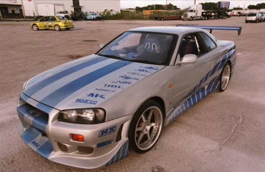

Nissan GTR R34 is een oudere versie van de Nissan GTR, uit het jaar 1999. Het is een 2-door coupé, met een motor in
in de voorkant en All-Wheel-Drive (Vier wiel aandrijving). De motor is een 2.6 L RB26DETT twin-turbo I6. Het is ook
mogelijk om een 2.8 L RB28DETT twin-turbo I6 motor. Meer info kan je vinden bij de linkjes onder het plaatje.

Klik op mij!
Whoop, Whoop nog een linkje
Home